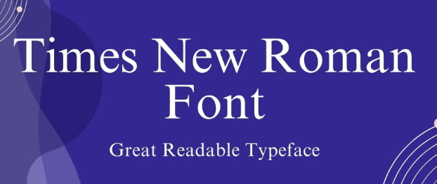

With this website, I really want showcase my ability to use words for meaningfulness and nuance. I chose to go with the
natural aesthetic tinted with nature addition because the nature mataphor stands to represent the thoughts
I pour out into this website, apart from the programming ability.
As far as this aspect of my website is concerned, I aim to use (when we get to CSS) an intuitive user approach.
By this I mean that when users interact with my website, I aim to lessen information overload by investing good intuitive approaches that include the synchronization of colour and symbols
to enhance faster navigation control and more seamless traversal of the main key components of my website.
By using colours such as green, red and blue, users are able to relate their conventional understanding of colour theory to the use of symbols to intuitively traverse the website smoother
with less or organized cognitive overload.
As such , The following are the color palettes I have decided to go with:
A picture of varying degrees of green color palettes from CoolorsA leafy background image of varying shades of green to brown color palettes
Color Palettes Block out on each Webpage showcase:
The following is the homepage color palette block out. The contrast between the darker shade of green and the peach color that covers the "home" creates a warm inviting ambience as the two colors
are not that much distorted from each other. Furthermore, the difference in hue and brightness between the high color and the low darker shade of green colors creates a subtle yet harmonius feel.
A Homepage wireframe color palette block out of #ECBA82 & #81C14B
The following is the profiles color palettes block out showing a lighter shade of green and what the ambience effect would be:
A profile page color palette block out of #ECBA82 & #81C14B
The following is the Design page color palette block out showing a darker shade of green against the lighter color of peach:
A design page color pallete block out of #2E933C & #ECBA82
The following is the Blogs page color palette block-out showing the contrast between the lighter shade of green and peach colors:
A Blog page color palette block out of #ECBA82 & #81C14B
The following is the Essays page color palette block-out between the lighter shade of forest green and the peach color:
An Essays page color palette block- out of #2E933C & #ECBA82
The following is the Portfolio page color palette block-out between the peachy color and the lighter shade of green:
A portfolio page color palette block-out of #ECBA82 & #81C14B
The following is the Commentary page color palette block-out between the darker shade of green and the peach color:
A Commentary page color palette block-out of #2E933C & #81C14B
The following is the Software Project color palette block out between the darker shade of green and the peac color:
A Software project page color palette block-out of #297045 and #81C14B
Visual Design Decisions:
As expressed in my week 4 blog post,
An example of this approach is the colour “green” to indicate to users their next input action within their traversal of the website (e.g. a green button or green hyperlink or arrow).
Semiotically, the signifier “green” and basing this specifically within an African context, extends to mean a “thumbs up “or “go ahead” of some sort when it comes to reading it as a sign.
The following are some of the visual designs that showcase the latter statement:
A green switch button showing the difference between a right or wrong actionSwitch gif using the color green to symbolize a correct action
Unique footages, (2024)
To expand further on the above video, I aim to use the color green to invoke intuitive responses from my users. This does not mean that this will be the only
color defining the scope of actionable events but it will play huge role in aiding users to understanding that they are on track with what they are doing
and most importantly, they are are doing the right thing.
Button Choices and Shapes:
-With a particular prioritization on user friendliness and inviting design cues, I aim to make use of rounded shaped buttons, especially around the corner of the edges of the button.
This is because a rounded or circular button shape is more inviting for the user to want to intuitively click on it as opposed to the use of a very straight, square corner edges. Shapes
play an importamt role in inferring meaning and by virtue of that , the visual appeals of the button within my site are going to be created with the
consideration of how they will get users to intuitively use their thoughts to interact with this site. That is, be able to infer that the rounded shape button is encouraging the user
to "click" on it to go to the next thing. The rounded shaped edges convey a strong sense of friendliness and "playfullness" as opposed to a button that has square shaped , creating a very
professional outlook, which is far from the type of content to be found within my site.
The following is an example of what possibilities of button shapes i'm looking at:
A picture of green rounded shaped button by Adobe Stock
Stock, 2024
Font & Layout explained:
With regads to the type of font to use, I decided to go with the Times New Roman font. The reason why is because it is easily readable and is easy on the eye.
While it maintains a professional look, it still also has an element of casualness which works well with the type of content found in my website. It would look
something like this:

A picture of the green backgroud written in the helvetica font
As far as layout is concerned , I aim to keep the original layout of the wireframes by using tables generated through CSS code. This is because the use of table structure
conveys a sense of organisation and neatness that I'd also like to infer within the way the content of my website is structured.